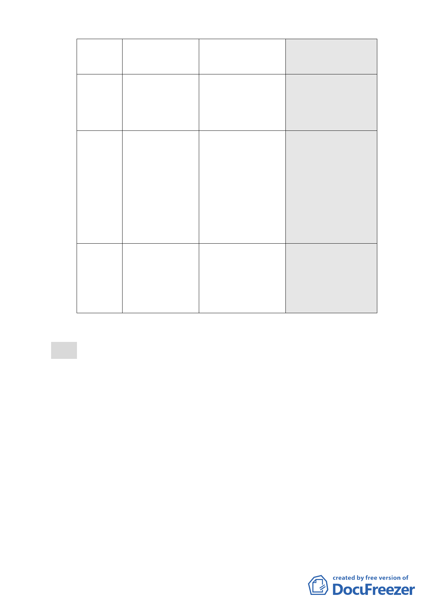

項目
建築
物高
度
臺北
好好
看獎
勵項
目
現行計畫
公展計畫
本次修正內容
（92.1.7）
（98.12.22）
（99.6.17）
基準容積之
50%。
積之總和不得超過基準
容積之 50%，其中適用
容積移轉者不得超過基
準容積之 20%。
之總和不得超過基準容
積之 50%，其中適用容積
移轉者不得超過基準容
積之 20%。
不超過 30 公尺 ●以不超過 90 公尺為原 ●建築物高度不得超過 70
為原則，有條件 則，有條件放寬高度， 公尺。
放寬至 40 公尺。
惟不得超過 100 公尺，
經審議未符合規定者，
建築物高度不得超過
●訂定生態軸帶視景高度
比之規定。
80 公尺。
●訂定生態軸帶視景高度
比之規定。
無
申請適用廣場式開
申請適用廣場式開放
放空間容積獎勵
空間容積獎勵
五、公民或團體陳情意見計 5 件（如後附綜理表）。
決議：
一、本案除以下各點應再作修正外，其餘依市府本次所送修正後
計畫書通過。
（一）本案有關建築物高度管制規定，依本會第 612 次委員會議
決議「建築高度 70 公尺（上限）、視覺廊道 40 公尺（下
限）」辦理。
（二）本案有關容積獎勵項目及容積上限（含容積移轉）規定，
經綜合考量本會第 612 次委員會續會所建立之大彎北段地
區通案審查原則，本案經查證申請單位過去於本地區業有
違規使用紀錄在案，且本委員會本次聽取申請單位之簡報
內容與臺北市都市設計及土地使用開發許可審議委員會
（以下簡稱都設委員會）之預審結果，兼認為所規劃之廣
場式開放空間，其開放性及對週邊環境之貢獻度均顯不
- 32 -